1. Bevor du anfängst
Tippe auf ein Bild, um es groß zu sehen. Die Bilder zeigen das Tool am Computer, am Handy stehen dieselben Dinge untereinander. Reports und die Datei von Bitvavo bekommst du nur am Computer: Am einfachsten machst du Stufe 1 am Computer und nimmst deine Daten mit einer Sicherung aufs Handy mit (Sichern und mitnehmen).
Das Tool wächst mit dir in drei Stufen. Nach jeder Stufe kannst du aufhören.
Stufe 1: Auswertung. Du lädst die Reports aus MetaTrader 5 und siehst Gewinn, Rendite und Trefferquote deiner Konten.
Was du brauchst: einen Computer mit MetaTrader 5, dazu Kontonummer und Investor-Passwort jedes Kontos. Beides steht im Tag-Portal.
Stufe 2: Dein echtes Geld. Du fügst die Tag-Daten ein und siehst, was du wirklich eingezahlt und ausgezahlt hast.
Was du brauchst: den Zugang zum Tag-Portal.
Stufe 3: Krypto-Steuer. Nur wenn du mit USDC oder USDT ein- oder auszahlst und deine Kryptos nicht schon mit einem anderen Tool rechnest. Du trägst ein, woher die Coins kamen und wohin sie gingen.
Was du brauchst: deine Kaufbelege oder die Datei deiner Börse, bei einer Krypto-Karte die Karten-App. Adressen brauchst du nicht.
Die Bilder vom Tool zeigen ein durchgehendes Beispiel: Anna, erfunden, mit drei Konten (Annas Beispiel).
Leg dir ein Lesezeichen an
Dann findest du das Tool immer schnell.
Drücke Strg+D.
Drücke ⌘ Cmd+D.
Am Handy legst du das Tool als Symbol auf den Startbildschirm (siehe Als Symbol auf deinem Gerät).
So hilft dir das Tool
- Oben neben dem Titel steht der Knopf „Erste Schritte“. Er zeigt dir alle Schritte der Reihe nach. Ein Klick auf einen Schritt bringt dich an die richtige Stelle im Tool.Tippst du auf einen Schritt, bringt dich das Tool an die richtige Stelle. Das „?“ rechts in der Reiterleiste öffnet dasselbe Fenster, auch wenn du weiter unten auf der Seite bist.
- (i) an jeder Karte erklärt, was die Karte zeigt.
- Gestrichelt unterstrichene Begriffe: Ein Klick zeigt eine Erklärung, sie bleibt offen.
- Ein Klick auf den Titel einer Karte klappt sie zu oder auf. Das Tool merkt sich das.
- Jede Datei ziehst du einfach ins Tool, egal welcher Reiter gerade offen ist. Das Tool erkennt, was es ist.
- Eine Datei wählst du über ein Feld, das mit „Hier tippen, um …“ beginnt. Bei jedem Schritt steht, wo dieses Feld ist.
- Ein gelbes „!“ an einem Reiter heißt: Dort wartet etwas auf dich.
- „Anleitung mit Bildern ↗“ in den Fenstern führt direkt zur passenden Stelle dieser Anleitung.
Gut zu wissen: Deine Daten liegen nur in dem Browser, in dem du das Tool nutzt. Mit einer Sicherung sicherst du sie und nimmst sie mit (Sichern und mitnehmen).
Als Symbol auf deinem Gerät
So öffnest du die Trading-Bilanz mit einem Tipp, wie eine App.
iPhone und iPad (Safari)
Öffne trading-bilanz.github.io, tipp auf das Teilen-Symbol (Quadrat mit Pfeil nach oben) und dann auf „Zum Home-Bildschirm“. Das Buch-Symbol kommt von selbst mit.
Gut zu wissen: Das Symbol hat meist einen eigenen Speicher. Fehlen dort deine Daten, lade deine Sicherung. Nutze danach immer das Symbol.
Android (Chrome, Vivaldi)
Öffne trading-bilanz.github.io und tipp auf das Menü. In Chrome wählst du „Installieren und Verknüpfung erstellen“, in Vivaldi „Seite hinzufügen zu …“ und dann „Startbildschirm“. Danach bietet der Browser „Installieren“ oder „Verknüpfung erstellen“ an. Wähle „Installieren“: Dann öffnet sich das Tool wie eine App, ohne Browserleiste, mit deinen Daten.
Windows
- Lade das Symbol herunter: Symbol für Windows (.ico) ↗
- Leg es an einen Ort, an dem es bleibt (z. B. den Ordner „Bilder“). Wird die Datei später verschoben, verliert die Verknüpfung ihr Symbol.
- Rechtsklick auf den Desktop, „Neu“, „Verknüpfung“. Als Speicherort trägst du ein:
https://trading-bilanz.github.io/. Als Namen: Trading-Bilanz. - Rechtsklick auf die neue Verknüpfung, „Eigenschaften“, „Anderes Symbol …“, „Durchsuchen“ und die heruntergeladene Datei wählen.
Nutzt du die Offline-Fassung, machst du die Verknüpfung zu deiner HTML-Datei: Rechtsklick auf die Datei, „Senden an“ (unter Windows 11 zuerst „Weitere Optionen anzeigen“), „Desktop (Verknüpfung erstellen)“, dann weiter wie in Schritt 4. Bei einer neuen Version ersetzt du die alte Datei (gleicher Ort, gleicher Name), dann bleiben Verknüpfung und Daten (siehe „Neue Version der Datei“).
Mac
Das Symbol als Bild: Symbol als Bild (PNG, 512 px) ↗

In Safari (ab macOS 14): „Ablage“, „Zum Dock hinzufügen“. Oder zieh die Adresse aus der Adresszeile auf den Schreibtisch und gib ihr das Buch als Symbol, wie unten beim Alias beschrieben.
Gut zu wissen: Die App im Dock hat meist einen eigenen Speicher. Fehlen dort deine Daten, lade deine Sicherung. Nutze danach immer die App im Dock.
Nutzt du die Offline-Fassung, machst du ein Alias deiner HTML-Datei: Rechtsklick auf die Datei, „Alias erzeugen“, und zieh das Alias auf den Schreibtisch. Für das Buch öffnest du das Bild (PNG) in „Vorschau“ und kopierst es. Dann Rechtsklick auf das Alias, „Informationen“, oben links auf das kleine Symbol klicken und einfügen. Bei einer neuen Version ersetzt du die alte Datei (gleicher Ort, gleicher Name), dann bleiben Alias und Daten (siehe „Neue Version der Datei“).
Stufe 1: Auswertung
Reiter Reports Kurse Auswertung Steuer
Du lädst die Reports aus MetaTrader 5 ins Tool und wählst den Trading Benefit, danach stehen deine Auswertung und deine Steuerzahlen.
2. MetaTrader 5 verbinden
Das geht nur am Computer. MetaTrader 5 am Handy und im Browser kann keine Reports speichern.
Das machst du nur einmal.
- Installiere MetaTrader 5 am Computer, am besten von der offiziellen Seite metatrader5.com ↗.
- Hole Kontonummer und Investor-Passwort: Öffne im Tag-Portal „CopyX → Follower Hub → Strategies“ und klicke dort beim Konto auf das Auge-Symbol unter „Credentials“.
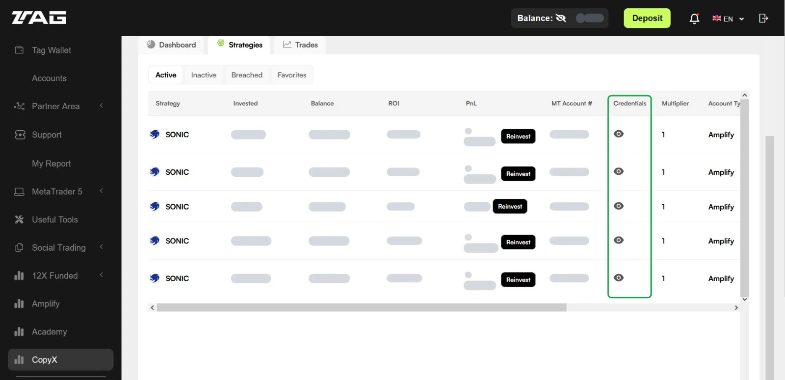
Zum Vergrößern anklicken. Grau verdeckt: Kontonummern und Beträge. - Wähle in MetaTrader 5 „Datei → Handelskonto eröffnen“ (engl. File → Open an Account) und suche „T.M. Financials Ltd“.
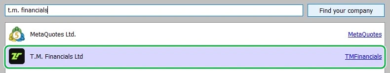
Klicke den Broker an und dann auf „Weiter“. - Wähle „mit dem aktuellen Handelskonto verbinden“ (engl. Connect with an existing trade account) und gib Kontonummer (engl. Login) und Investor-Passwort (engl. Password) ein. Der Server steht schon da.
Mit dem Investor-Passwort kannst du nur schauen, nicht handeln.
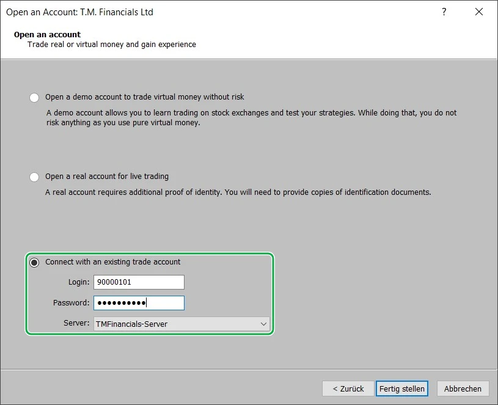
Die Kontonummer im Bild ist erfunden. Zum Schluss klickst du auf „Fertig stellen“. - Wiederhole das für jedes weitere Konto. Danach stehen alle Konten links im Navigator („Ansicht → Navigator“, engl. View → Navigator, Strg+N). Ein Doppelklick wechselt das Konto.
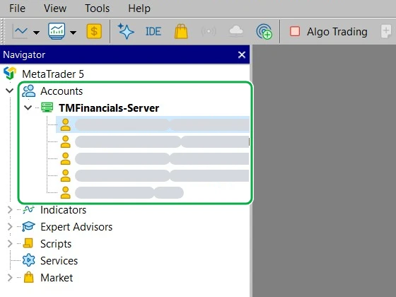
Grau verdeckt: Kontonummern und Namen.


3. Report speichern
Das geht nur am Computer. MetaTrader 5 am Handy und im Browser kann keine Reports speichern. Der „Bericht“ aus der MT5-App am Handy reicht nicht: Er enthält nur Summen, keine einzelnen Trades.
- Öffne MetaTrader 5 am Computer und wähle das Konto (Doppelklick im Navigator).
- Wähle „Ansicht → Terminal“ (engl. View → Toolbox) oder drücke Strg+T.
- Klicke im Fenster „Terminal“ (engl. Toolbox) auf den Reiter „Kontohistorie“ (engl. History).
- Klicke mit der rechten Maustastemit zwei Fingern (oder ctrl-Klick) in die Liste und wähle „Ganze Historie“ (engl. All History). Später reicht ein kürzerer Zeitraum, solange keine Lücke entsteht. Das Tool merkt eine Lücke.
- Klicke noch einmal mit der rechten Maustastemit zwei Fingern (oder ctrl-Klick) in die Liste, wähle „Bericht → HTML (Internet Explorer)“ (engl. Report → HTML (Internet Explorer)) und speichere die Datei.
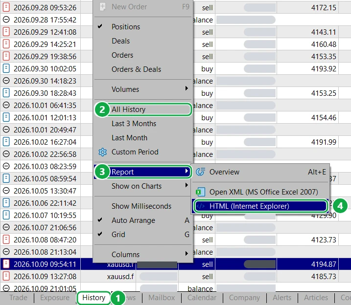
Die Kreise zeigen die Reihenfolge. Grau verdeckt: Ticketnummern und Mengen. - Wiederhole das für jedes Konto. Die Dateien heißen meist ReportHistory-Kontonummer.html. Den Ordner wählst du beim Speichern selbst.

4. Reports ins Tool laden
Öffne die Trading-Bilanz. Beim ersten Öffnen begrüßt dich das Tool und fragt, wo du Steuern zahlst: Wähle „Österreich“, „Deutschland“ oder „Ohne Steuer“. Das kannst du später im Reiter „Steuer“ ändern.
Ziehe dann alle gespeicherten Reports auf einmal ins Tool. Das Tool zeigt sie im Reiter „Reports“.
Tippe dann im Reiter „Reports“ auf das Feld „Hier tippen, um eine Report-Datei auszuwählen“ und wähle die Dateien aus. Du kannst alle auf einmal wählen. Die Reports entstehen am Computer: Wie deine Daten von dort aufs Handy kommen, steht in Sichern und mitnehmen.
Gemeint ist die HTML-Datei aus MetaTrader 5 (sie endet auf .html), nicht ein Report als PDF oder Excel.
Buchungsarten
Erscheint im Reiter „Reports“ die Karte „Buchungsarten“, enthält dein Report Buchungen, die keine Trades sind und die das Tool nicht kennt. Wähle bei jeder, was sie bedeutet. Das Tool merkt es sich. Solange eine Buchung keine Bedeutung hat, zeigt das Tool keine Auswertung und keine Steuer. Weißt du es nicht, schau beim Beispiel-Datum im MT5-Report nach, frag den Support oder wähle „Noch unklar“. Dann rechnet das Tool weiter, lässt diese Buchung aber weg und zeigt einen Hinweis: oben in der Auswertung und im Reiter Steuer in der Karte „CFD“ unter der Tabelle.
5. Deine Konten
Der Trading Benefit heißt bei Tag auch „Amplifier“. Tag vervielfacht damit dein eingezahltes Geld im MT5: Bei ×24 stehen 100 USD als 2.400 USD da. Tag vervielfacht Gewinne und Performance Fee nicht. Das Tool braucht ihn, um deine Investition und deine Rendite zu rechnen. Für die Steuer spielt er keine Rolle.
Nach dem Laden stehen deine Konten in der Karte „Deine Konten“. Wähle bei jedem Konto den Trading Benefit, meist „×12“ oder „×24“. Hast du einen anderen, wähle „andere Zahl …“ und gib ihn ein. Hast du keinen, wähle „×1“. Mit „für alle ▾“ im Spaltenkopf setzt du ihn für mehrere Konten auf einmal.

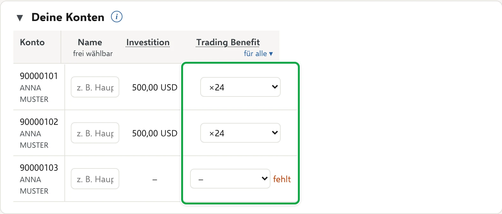
So findest du ihn: Öffne im Tag-Portal „CopyX → Follower Hub → Strategies“ und teile „Balance“ durch „Invested“. Die Spalte „Multiplier“ ist etwas anderes.
In der Spalte „Name“ kannst du jedem Konto einen eigenen Namen geben, um es in der Auswertung leicht zu erkennen.
Annas Stand im Tool: Investition 500,00 USD, 500,00 USD und 250,00 USD
6. Wechselkurse
Hier ist meist nichts zu tun: Die Kurse sind im Tool eingebaut, und fehlende lädt es von selbst.
Für Beträge in Euro und für die Steuer braucht das Tool den Wechselkurs jedes Tages, an dem du eine Buchung hast. Es nimmt den Referenzkurs der Europäischen Zentralbank (EZB). In USD funktioniert die Auswertung auch ohne.

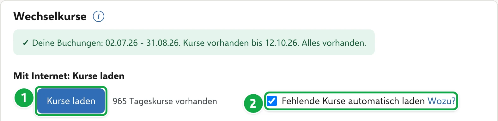
- „Kurse laden“ holt fehlende Kurse sofort.
- Das Häkchen „Fehlende Kurse automatisch laden“ ist von Anfang an gesetzt: Fehlen die neuesten Tage, lädt das Tool sie aus dem Internet, sobald du es öffnest, neue Reports lädst oder Tag-Daten einfügst. Nimmst du es weg, geht das Tool nur ins Internet, wenn du auf „Kurse laden“ klickst.
Ohne Internet: Soll das Tool gar nicht ins Internet gehen, lade die Datei selbst von der Seite der EZB ↗ herunter und ziehe sie ins Tool, tippe im Reiter „Kurse“ unter „Ohne Internet“ auf das Feld „Hier tippen, um eine EZB-Datei auszuwählen“ und wähle sie aus. Bei jedem Abruf, auch beim Herunterladen der Datei, sieht die EZB deine IP-Adresse.
Deine Auswertung
Im Reiter „Auswertung“ siehst du deine Ergebnisse. Oben steht die Filterzeile, darunter stehen die Karten.
Die Filterzeile
Sie bleibt beim Scrollen stehen und gilt für die Karten darunter.
- „Zeitraum“: Wähle „Gesamter Zeitraum“, ein Jahr, „Dieser Monat“, „Letzte 3 Monate“ oder „Individuell“.
- „Konten“ (ab zwei Konten): Hier wählst du, welche Konten zählen. Mit „nur dieses“ siehst du ein einzelnes Konto.
- „PF verteilt“ oder „PF laut MT5“: PF ist die Performance Fee, Tag bucht sie jeden Samstag vom Wochengewinn ab. Bei „PF verteilt“ trägt jeder Trade seinen Anteil der Fee, und du siehst, was dir von jedem Trade bleibt. Bei „PF laut MT5“ steht die Fee dort, wo Tag sie abbucht, und die Trades zeigen ihr Ergebnis vor der Fee. Auf die Steuer hat der Schalter keinen Einfluss.
- „USD“ oder „EUR“: Beträge wie im MT5-Report oder in Euro zum EZB-Kurs des Tages. Prozente bleiben gleich.
- „Inhalt“ springt zu jeder Karte.
Die Karten
Ganz oben steht die Karte „Überblick“ mit deinen wichtigsten Zahlen.

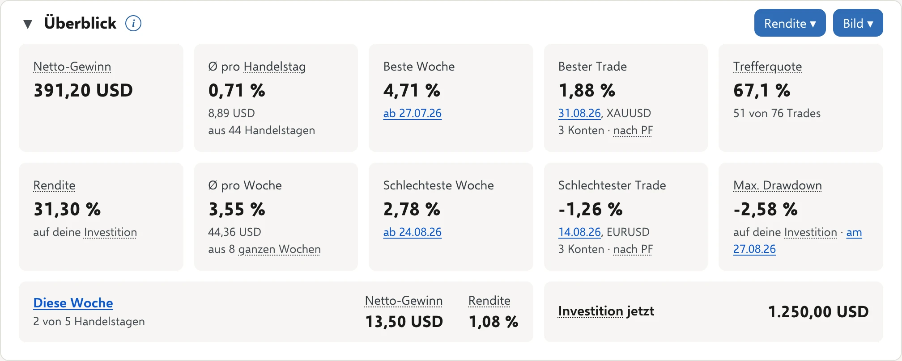
Darunter folgen „Grafiken“, „Hochs und Tiefs“, „Meilensteine“ und „Durchschnitt“, dann „Pro Woche“, „Pro Monat“, „Pro Konto“ und „Netto pro Konto und Monat“, zuletzt „Was wäre wenn“. Nach Stufe 2 kommt „Dein echtes Geld“ dazu.
Meilensteine
Die Karte „Meilensteine“ sammelt deine Rekorde, Serien und Erreichtes. Zeitraum und Konten wählst du rechts in der Karte, von der Filterzeile oben übernimmt sie nur die Währung, und sie rechnet immer mit „PF verteilt“. Ab und zu erscheint an einem Wert, neben „Überblick“ oder am Reiter „Auswertung“ ein besonderes Symbol. Du wirst es erkennen. Ein Klick darauf zeigt dir, was du erreicht hast.
Bilder zum Teilen
Deine Ergebnisse kannst du als Bild speichern oder teilen: den Überblick, die Grafiken und jeden Meilenstein. Die Bilder sind eigens dafür gestaltet, immer hell und klar, auch wenn du das Tool dunkel nutzt. Kontonamen stehen nie darin.
Das Bild zeigt, was du oben eingestellt hast: Zeitraum, Konten und PF. Beim Überblick findest du „Betrag zeigen“, wenn du den Knopf „Bild“ anklickstantippst (auf schmalen Handys ein Bild-Symbol), bei einem Meilenstein unten im Fenster. Ohne Beträge zeigt das Bild nur Prozente und Zahlen wie Wochen oder Trades, dein Kontostand bleibt bei dir. Das Bild zeigt die Grafik so, wie du sie eingestellt hast. Willst du keine Beträge zeigen, stell die Einheit vorher auf %. Die Grafik „Investition“ zeigt immer Beträge.
KlickeTippe im Überblick oder bei den Grafiken auf „Bild“. Bei einem Meilenstein steht der Knopf unten im Fenster, das sich mit einem Klick auf ihn öffnetöffnet, wenn du auf ihn tippst. Kann dein Browser teilen, schickst du das Bild direkt weiter, z. B. in Telegram, sonst speicherst du es als Datei. Das Bild entsteht auf deinem Gerät, und nur du entscheidest, wohin es geht.
Deine Steuerzahlen
Der Reiter „Steuer“ rechnet aus denselben Reports wie die Auswertung deine Zahlen für die Steuererklärung, in Euro. Das Tool ist keine Steuerberatung: Lass die Zahlen prüfen, bevor du sie verwendest.

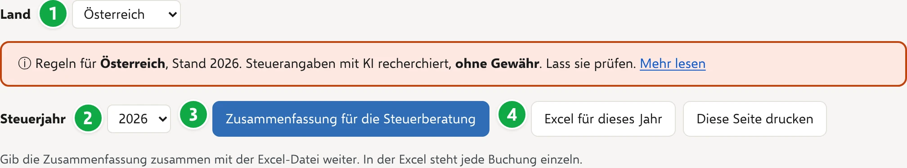
- „Land“: Österreich, Deutschland oder „Ohne Steuer“. Anna lebt in Österreich.
- „Steuerjahr“: das Jahr, für das du die Zahlen brauchst.
- „Zusammenfassung für die Steuerberatung“: Seite 1 mit den Zahlen, danach die Annahmen. Gibt es etwas, das deine Steuerberatung entscheiden muss, steht es dort unter „Offene Fragen“.
- „Excel für dieses Jahr“: jede Buchung einzeln, mit Kurs und Euro-Betrag. Gib beide zusammen weiter.
Konten für die Steuer

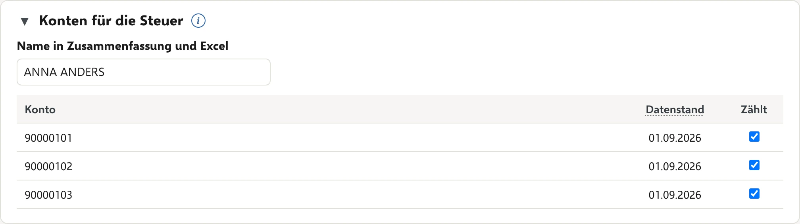
Oben steht der Name für Zusammenfassung und Excel, bei Anna „ANNA ANDERS“ aus ihren Reports. Du kannst ihn ändern. Darunter stehen deine Konten mit ihrem Datenstand. Nimmst du bei einem Konto das Häkchen „Zählt“ weg, fehlt es in der Steuer. In der Auswertung bleibt es.
CFD 2026

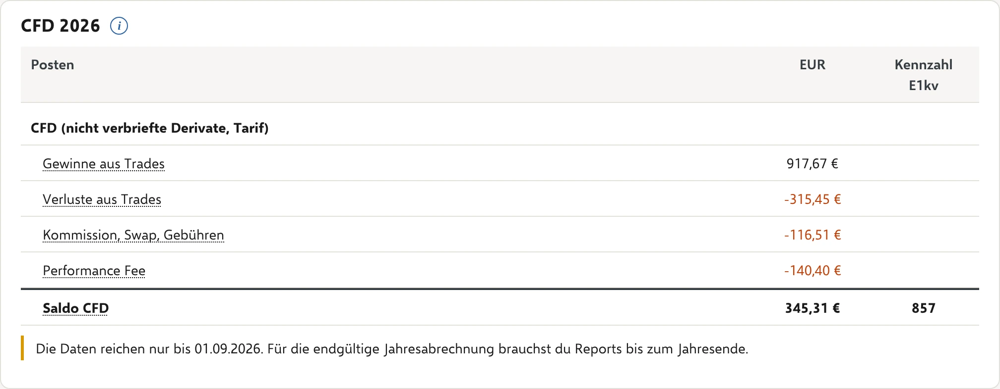
Die Karte „CFD 2026“ zeigt Annas Trading in Euro: Gewinne, Verluste, Kosten und Performance Fee, darunter den Saldo von 345,31 € mit der Kennzahl für die Steuererklärung.
Zahlst du mit USDC oder USDT ein oder aus, kommt die Karte „Krypto“ dazu (Stufe 3).
Sichern und mitnehmen
Deine Daten liegen nur in dem Browser, in dem du das Tool nutzt. Eine Sicherung ist eine Datei mit allem, was im Tool steht: Damit sicherst du deine Daten und nimmst sie auf ein anderes Gerät oder in einen anderen Browser mit.
Klicke im Reiter „Sicherung“ auf „Sicherung speichern“. Mit „Sicherung laden“ kommt sie zurück ins Tool. Das ersetzt alles, was dort im Tool steht. Am Computer kannst du eine Sicherung auch einfach ins Tool ziehen. Das Tool fragt vorher nach.
Am Handy weitermachen
Speichere am Computer eine Sicherung. Bring die Datei aufs Handy, z. B. über deine Cloud, per Mail an dich selbst oder per Telegram an „Gespeicherte Nachrichten“, und speichere sie dort. Tippe dann am Handy im Reiter „Sicherung“ auf „Sicherung laden“. Schick die Datei nur an dich selbst.
Online-Version und heruntergeladene Datei
Online-Version und heruntergeladene Datei sehen nicht dieselben Daten. Auch zwischen ihnen nimmst du deine Daten mit einer Sicherung mit.
Nutzt du die heruntergeladene Datei: Lege die Datei an einen festen Ort, bevor du anfängst, und öffne sie immer von dort. Manche Browser merken sich deine Daten nur für genau diese Datei an genau diesem Ort. Verschiebst du sie oder gibst ihr einen anderen Namen, startet das Tool leer. Deine Daten sind nicht weg: Am alten Ort mit dem alten Namen sind sie wieder da. Willst du die Datei trotzdem verschieben oder umbenennen, speichere vorher eine Sicherung und lade sie danach.
Neue Version der Datei
Nutzt du die heruntergeladene Datei, bekommst du sie jederzeit neu online im Reiter „Sicherung“ mit „Für offline herunterladen“. Bei einer neuen Version ersetzt du die alte Datei: gleicher Ort, gleicher Name. Heißt die neue Datei zum Beispiel „trading-bilanz (1).html“, gib ihr den alten Namen. Deine Daten bleiben dabei erhalten.
Deine Auswertung und deine Steuerzahlen für das Trading (CFD) sind fertig. Speichere eine Sicherung, dann kannst du hier aufhören.
Stufe 2: Dein echtes Geld
Reiter Wallet
Du fügst die Tag-Daten ein und siehst, was du wirklich eingezahlt und ausgezahlt hast.
Annas Beispiel
Anna ist erfunden und lebt in Österreich. Die Bilder vom Tool zeigen ihre Daten. Die Schritte stehen in Du-Form: So machst du es mit deinen eigenen.
| Datum | Was Anna macht |
|---|---|
| 29.06. | kauft bei Bitvavo 1.000,50 USDC |
| 30.06. | schickt 2 × 500 USDC von Bitvavo in ihre eigene Wallet |
| 30.06. | kauft bei Kraken 252 USDC für 222,00 € und schickt sie in ihre Wallet, 250 USDC kommen an |
| 01.07. | zahlt bei Tag 500, 500 und 250 USD ein (mit USDC) |
| 28.07. | kauft bei Bitvavo 0,012 ETH für 20,00 € |
| 17.08. | lässt sich von Tag 150 USD in ihre Wallet auszahlen |
| 20.08. | lädt 100 USDC auf ihre Krypto-Karte, 99 USDC kommen an |
| 22.08. | zahlt im Supermarkt mit der Krypto-Karte, abgebucht werden 32,10 USDC, davon 0,96 USD Gebühr |
| 25.08. | tauscht bei Bitvavo 0,003 ETH in 5,73 USDC |
| 26.08. | tauscht bei Kraken 0,01 ETH in 19,05 USDC (diese ETH hat sie früher bei Kraken gekauft: 0,015 ETH für 30,00 €) |
| 27.08. | tauscht bei Kraken 18 USDC in ETH |
| 01.09. | setzt sich ans Tool |
Für Stufe 2 zählen nur die Ein- und Auszahlungen bei Tag (01.07. und 17.08.). Alles andere gehört zu Stufe 3.
7. Tag-Daten einfügen
Die Tag-Daten sind deine Ein- und Auszahlungen bei Tag. Sie sind keine Datei: Du kopierst sie aus dem Tag-Portal und fügst sie ins Tool ein.
Öffne den Reiter „Wallet“. Oben steht eine Leiste mit „＋ Daten“, „Adressen“ und „Noch offen“, darunter stehen Karten wie „Bestand“ und „Alle Vorgänge“. Beim ersten Mal kommt das Fenster „Was du hier machst“. Klicke dort auf „Mit den Tag-Daten anfangen“.
Dann öffnet sich das Fenster „＋ Daten“ mit dem Feld „Hier einfügen“. Später findest du es über „＋ Daten“ bei „Tag-Daten“.

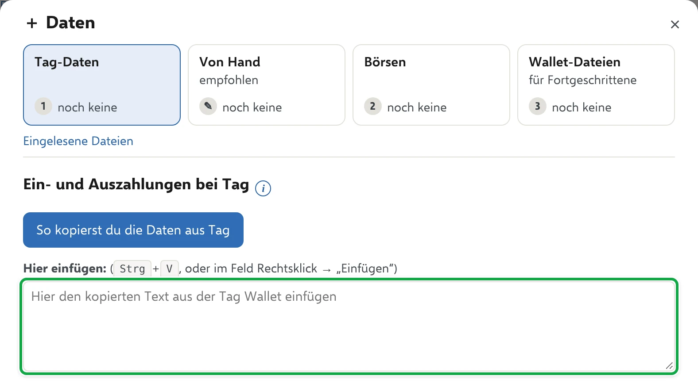
Unter dem Feld fragt das Tool: „Mit welchem Coin hast du ein- und ausgezahlt?“ Wähle „USDC“, „USDT“ oder „Anderer Coin“. Das gilt für alle Zeilen mit Krypto, du kannst es danach bei jeder Zeile ändern. Mit „Anderer Coin“ (z. B. BTC) zählt die Zeile für „Dein echtes Geld“, die Steuer dafür rechnet das Tool nicht.
Öffne das Tag-Portal in einem zweiten Browser-Tab und gehe so vor:
- Klicke im Tag-Portal links auf „Tag Wallet“.Tippe im Tag-Portal rechts oben auf die drei Striche und dann auf „Tag Wallet“.
- Einzahlungen: Öffne links in der „Banking Zone“ „Transaction History“Scrolle hinunter zur „Banking Zone“, tippe dort auf „Transaction History“ und wähle bei „From“ ein Datum vor deiner ersten Einzahlung.
- KlickeTippe auf „More Filters“, wähle bei „Method“ „PSP“ und klicketippe auf „Submit“. Wähle bei „Show“ die größte Zahl.
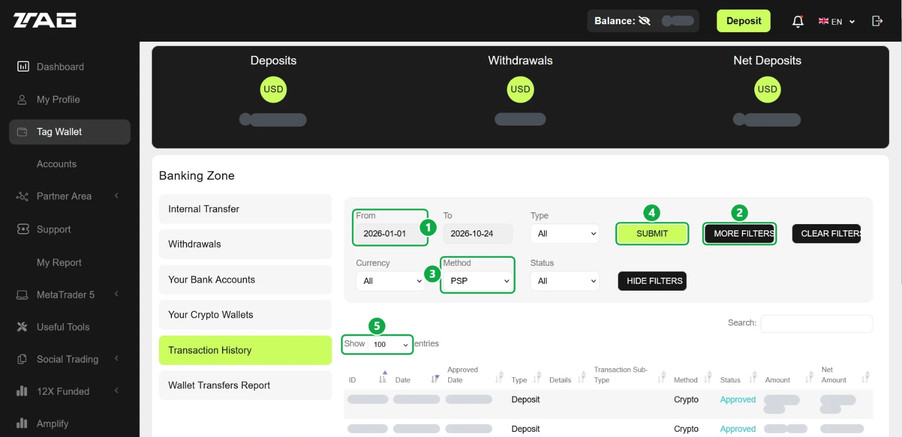
Die Kreise zeigen die Reihenfolge. Grau verdeckt: Guthaben, Summen, Nummern, Datum und Beträge. - Kopiere die ganze Seite und füge sie ins Feld „Hier einfügen“ ein. KlickeTippe dann auf „Übernehmen“.
Oben auf der Seite stehen deine Summen bei Tag (Deposits, Withdrawals), unten die Anzahl der Einträge. Damit prüft das Tool, ob alles angekommen ist.
Klicke auf die Seite und drücke Strg+A, dann Strg+C. Klicke ins Feld „Hier einfügen“ und drücke Strg+V.Klicke auf die Seite und drücke ⌘ Cmd+A, dann ⌘ Cmd+C. Klicke ins Feld „Hier einfügen“ und drücke ⌘ Cmd+V.Drücke lange auf die Seite, wähle „Alles auswählen“, dann „Kopieren“. Tippe ins Feld „Hier einfügen“, drücke lange und wähle „Einfügen“.Das Tool zeigt dann eine Vorschau:
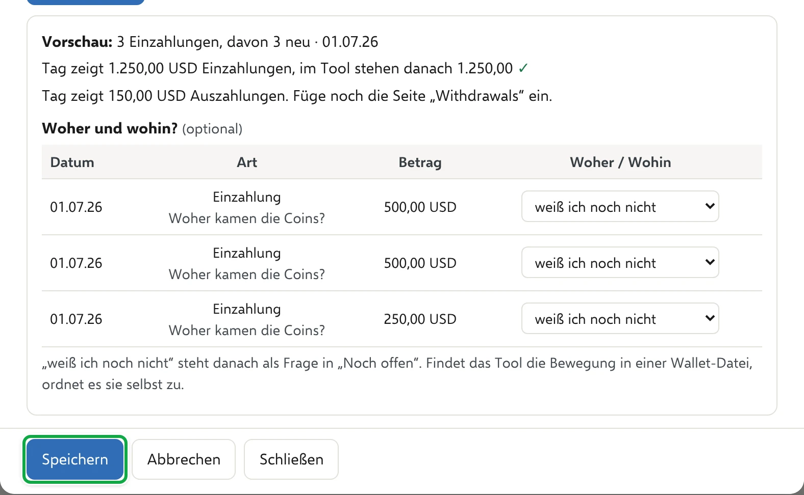
Annas Vorschau. Die Auszahlungen fehlen noch, darum steht dort „Füge noch die Seite ‚Withdrawals‘ ein.“ „Woher und wohin?“ ist freiwillig: Du kannst bei jeder Einzahlung die Wallet wählen, aus der die Coins kamen, und bei jeder Auszahlung die Wallet, in die sie gingen. Anna lässt überall „weiß ich noch nicht“ stehen, das Tool fragt später danach. Klicke dann unten im Fenster auf „Speichern“.
Hat eine Zeile eine Uhrzeit, steht sie umgerechnet da: Tag zeigt die Zypern-Zeit, das ganze Jahr 1 Stunde später als in Österreich und Deutschland. Ein Klick auf die Uhrzeit zeigt, was bei Tag steht.
- Auszahlungen: Öffne links in der „Banking Zone“ „Withdrawals“ und klicke aufTippe in der „Banking Zone“ auf „Withdrawals“ und dann auf „Display Processed Withdrawals“ (danach steht dort „Hide Processed Withdrawals“). Wähle bei „Show“ die größte Zahl, kopiere die ganze Seite und füge sie ins Feld „Hier einfügen“ ein. KlickeTippe dann auf „Übernehmen“.
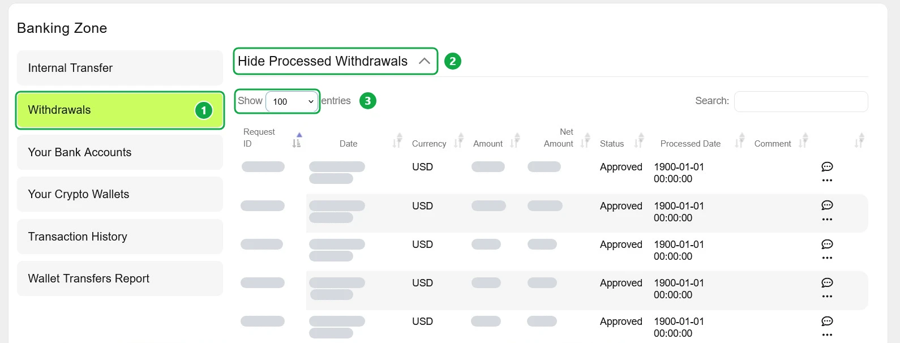
Die Kreise zeigen die Reihenfolge. Grau verdeckt: Guthaben, Summen, Nummern, Datum und Beträge. - Du kannst jederzeit wieder alles einfügen. Das Tool erkennt, was schon da ist.


PSP ist ein Filter bei Tag: Er zeigt nur Einzahlungen von außen, nicht die Überträge zwischen der Tag Wallet und deinen Trading-Konten.
Per Bank ein- oder ausgezahlt? Steht bei einer Einzahlung eine andere Methode als Krypto, fragt die Vorschau, zum Beispiel: „Methode ‚Bank‘ erkannt. Das Tool behandelt sie als Ein- oder Auszahlung per Bank. Stimmt das?“ Darunter wählst du „Ja, per Bank“ oder „Nein, mit Krypto“. Per Bank heißt: keine Krypto-Steuer, keine Wallet, die Zahlung zählt für „Dein echtes Geld“. Bei einer Auszahlung per Bank wählst du unter „Woher und wohin?“ „Bank“. Das Tool merkt sich deine Antwort. Ändern kannst du sie später in „＋ Daten“ bei „Tag-Daten“ in der Liste „Per Bank oder mit Krypto?“.
Gut zu wissen: Zahlst du bei Tag USDC ein, tauscht Tag sie sofort in USD. Steuerlich ist das ein Verkauf. Bei einer Auszahlung in USDC ist es umgekehrt ein Kauf. Das Tool rechnet mit USDC und USDT.
Danach zeigt der Reiter „Auswertung“ die Karte „Dein echtes Geld“.

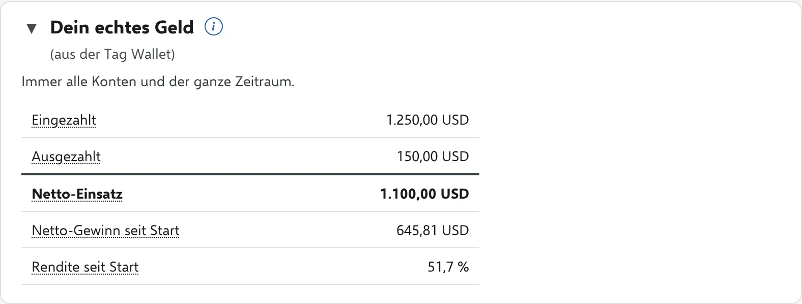
Hast du mit USDC oder USDT ein- oder ausgezahlt, steht jetzt im Reiter „Wallet“ bei „Noch offen“ eine rote Zahl. Sie betrifft nur die Krypto-Steuer (Abschnitt 8).
Annas Stand im Tool: noch kein Bestand · „Noch offen“ 4 (4 rot)
Die Auswertung zeigt jetzt auch „Dein echtes Geld“. Speichere eine Sicherung und mach nur weiter, wenn du mit USDC oder USDT ein- oder auszahlst.
Stufe 3: Krypto-Steuer
Reiter Wallet
Du trägst ein, woher deine Coins kamen und wohin sie gingen, und beantwortest danach die Fragen in „Noch offen“.
Schon ein anderes Krypto-Tool?
Rechnest du deine Kryptos schon mit einem anderen Tool, z. B. Blockpit? Dann bleib bei deinem Tool, überspring Stufe 3 und schalte die Krypto-Steuer in diesem Tool aus. Sonst zählen deine USDC und USDT doppelt. Das Tool rechnet dann nur den CFD-Teil der Steuer.
- Klicke im Reiter „Wallet“ oben auf das (i) am Ende des Einleitungstexts. Es öffnet sich das Fenster „Was du hier machst“.
- Klicke auf „Krypto-Steuer hier ausschalten“.
- Klicke bei der Rückfrage auf „Ausschalten“.
Danach zeigt „Noch offen“ keine roten Punkte mehr.
Wichtig für dein anderes Tool: Eine Einzahlung bei Tag zählt als Verkauf deiner USDC oder USDT, eine Auszahlung von Tag als Kauf (siehe Abschnitt 7, „Gut zu wissen“). So rechnet dieses Tool. Markiere sie in deinem Tool genauso und kläre das mit deiner Steuerberatung.
Den Schalter gibt es auch unten im Fenster „Noch offen“ und im Reiter „Steuer“ (Häkchen „Krypto in diese Abrechnung aufnehmen“). Einschalten kannst du die Krypto-Steuer jederzeit wieder.
8. Was „Noch offen“ dir sagt
Nach dem Einfügen der Tag-Daten steht oben im Reiter „Wallet“ bei „Noch offen“ eine rote Zahl. Sie sagt, wie viele Fragen das Tool noch an dich hat. Das Tool nennt sie „Punkte“.

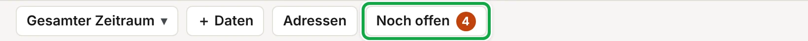
Warum fragt das Tool? Tag zeigt nur, dass Geld angekommen oder weggegangen ist. Hast du mit USDC oder USDT eingezahlt, zählt für die Steuer aber, wann und zu welchem Preis du diese Coins gekauft hast. Deshalb fragt das Tool bei jeder Einzahlung „Woher kamen die Coins?“ und bei jeder Auszahlung „Wohin gingen die Coins?“.
Du musst jetzt noch nicht antworten. Trage zuerst ein, woher die Coins kamen: mit der Börsen-Datei oder von Hand. Danach findet das Tool oft selbst die Antwort, und aus Rot wird Gelb.
Die Zahl kann zuerst steigen. Mit neuen Einträgen kommen manchmal neue Punkte dazu. Das ist normal. Bei Anna kommen in Abschnitt 12 zwei dazu.
Wie du die Punkte beantwortest, steht in Abschnitt 13.
9. Börsen-Datei laden
Hast du deine Coins bei einer Börse gekauft, übernimmt das Tool Käufe, Verkäufe und Auszahlungen aus einer Datei der Börse. Das Tool liest Dateien von Bitvavo und DFX.swiss. Hast du bei einer anderen Börse gekauft, zum Beispiel bei Kraken, trage den Kauf von Hand ein.
Im Tool findest du das unter „＋ Daten“ bei „Börsen“: Der Knopf „So bekommst du die Datei deiner Börse“ nennt die Dateien, die das Tool liest, und unter „Ohne Datei:“ stehen die Knöpfe für einen Eintrag von Hand.
So bekommst du die Datei bei Bitvavo
Die Bilder zeigen Bitvavo auf Englisch, die englischen Namen stehen in Klammern. Ob Bitvavo bei dir deutsch oder englisch eingestellt ist, spielt keine Rolle: Die Datei ist in beiden Sprachen gleich.
- Öffne bitvavo.com im Browser am Computer und melde dich an. In der App von Bitvavo gibt es die Datei nicht.
- Fahre mit der Maus über deinen Namen oben rechts. Im Menü, das sich dann öffnet, klicke auf „Transaktionsverlauf“ (engl. Transaction history).
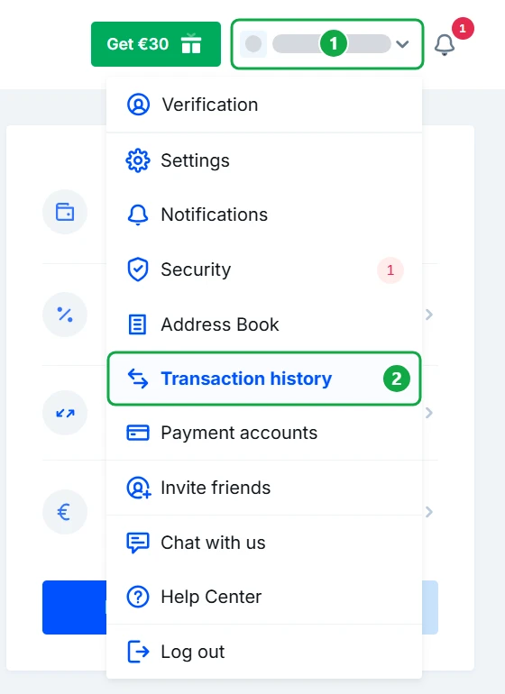
Die Kreise zeigen die Reihenfolge. Grau verdeckt: Name. - Klicke auf der Seite „Transaktionsverlauf“ (engl. Transaction History) rechts oben auf „Exportieren“ (engl. Export).
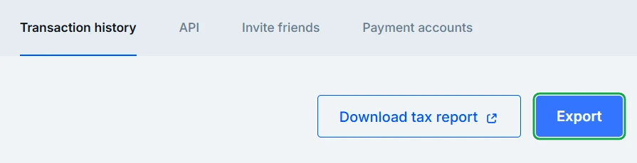
Grau verdeckt: Name. - Wähle im Fenster „Vollständige Transaktionshistorie (CSV)“ (engl. Full history (CSV)) und klicke auf „Exportieren“ (engl. Export). Die Datei heißt „Vollständige Transaktionshistorie.csv“ (engl. „Full history.csv“) und landet in deinem Ordner für Downloads.
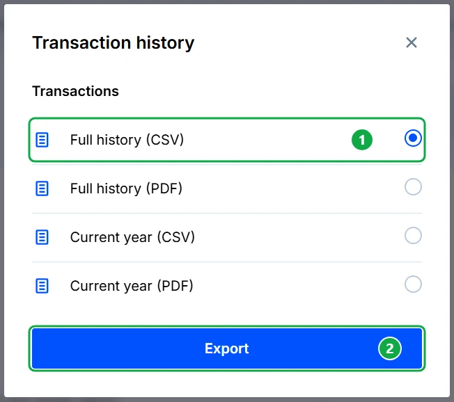
Die Kreise zeigen die Reihenfolge.


„Aktuelles Jahr (CSV)“ (engl. Current year (CSV)) geht auch. Mit der vollständigen Datei hat das Tool aber alle Käufe, auch die aus früheren Jahren.
So bekommst du die Datei bei DFX.swiss
Die Bilder zeigen DFX.swiss auf Deutsch.
- Öffne app.dfx.swiss und melde dich an. Das geht am Computer und am Handy.
- Öffne oben rechts das Menü. Im Bild steht dort ein ×, weil das Menü schon offen ist.

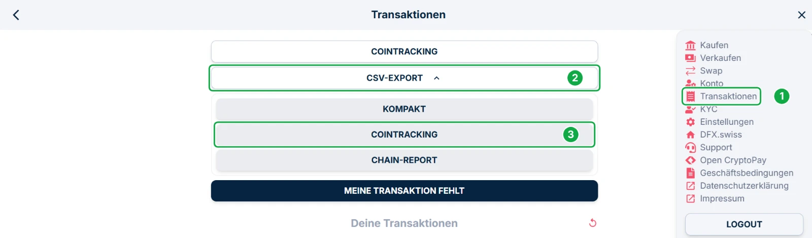
- Wähle im Menü „Transaktionen“.
- Wähle „CSV-Export“.
- Wähle darunter „CoinTracking“. Nimm nicht den oberen Knopf „CoinTracking“, sondern den unter „CSV-Export“.
Der Name der Datei endet auf „coin-tracking.csv“. Sie landet meist in deinem Ordner für Downloads.
Lies die Datei ein wie unten beschrieben. Das Tool fragt, welche Wallet du mit DFX.swiss nutzt, und merkt sich deine Wahl. Es zählt Käufe und Verkäufe bei dieser Wallet und legt für DFX.swiss keine eigene Wallet an: Beim Kauf kommen die Coins in diese Wallet, beim Verkauf schickst du sie von dort an DFX.swiss.
Ziehe die Datei ins Tool. Das Tool öffnet das Fenster „＋ Daten“ und zeigt eine Vorschau.
Öffne im Reiter „Wallet“ oben „＋ Daten“, wähle „Börsen“, tippe auf das Feld „Hier tippen, um eine Börsen-Datei (.csv) auszuwählen“ und wähle die Datei aus. Das Tool zeigt eine Vorschau.

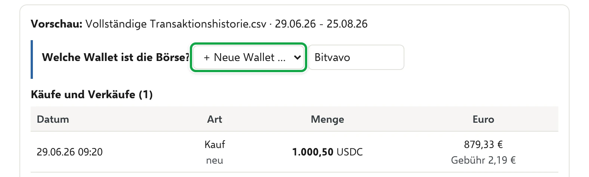
Welche Wallet ist die Börse? Das Tool nennt jeden Ort, an dem Coins liegen, eine Wallet, auch das Konto bei einer Börse und die Krypto-Karte. Beim ersten Mal legt es für die Börse eine neue Wallet an und schlägt den Namen „Bitvavo“ vor. Lass das so.
Darunter steht, was das Tool übernimmt, bei Anna der Kauf vom 29.06. „neu“ heißt: Das ist noch nicht im Tool. In Annas Datei steht auch ein Tausch, dazu Abschnitt 12.

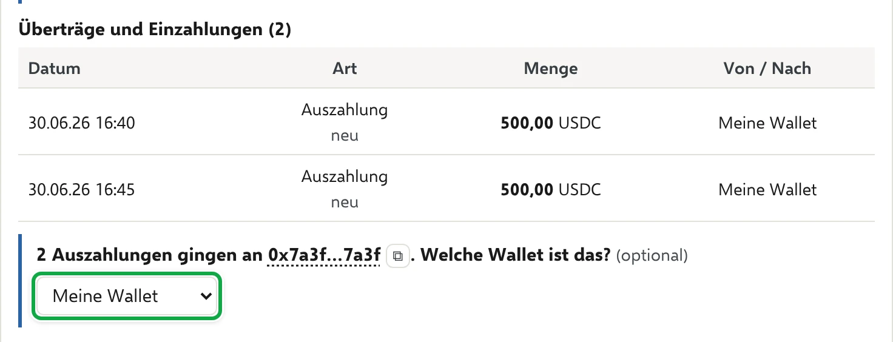
Welche Wallet ist das? Hier fragt das Tool, wohin du die Coins von der Börse geschickt hast. Die Adresse im Bild steht in der Datei der Börse, du musst sie nicht kennen. Bei Anna gingen beide Auszahlungen in ihre eigene Wallet: Sie wählt „Meine Wallet“. Diese Wallet legt das Tool am Anfang selbst an, den Namen kannst du ändern (siehe unten).
Klicke unten auf „Übernehmen“. Die Meldung sagt, was das Tool übernommen hat und was sich in „Noch offen“ ändert.

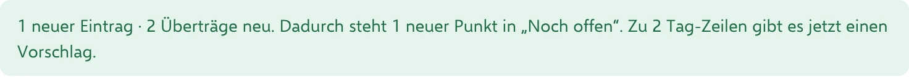
Du kannst die Datei später wieder einlesen, zum Beispiel jeden Monat. Das Tool erkennt, was schon da ist.
Deiner Wallet einen Namen geben
Den Namen „Meine Wallet“ kannst du ändern: Klicke im Reiter „Wallet“ oben auf „Adressen“ und in der Zeile deiner Wallet auf „✎“.

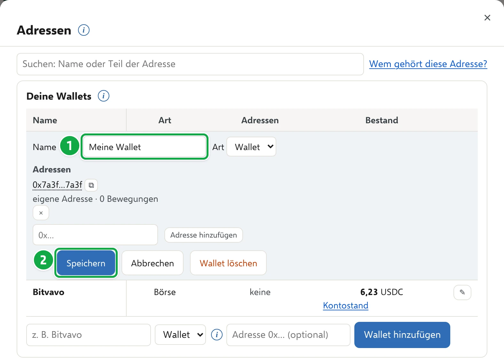
- Gib den neuen Namen ein, zum Beispiel den Namen deiner Wallet-App.
- Klicke auf „Speichern“.
Annas Stand im Tool: Bitvavo 6,23 USDC · Meine Wallet 1.000,00 USDC · „Noch offen“ 4 (2 rot, 2 gelb)
In Annas Geschichte sind diese 1.000 USDC am 01.07. schon zu Tag gegangen. Das Tool weiß noch nicht, woher die Einzahlungen bei Tag kamen. Das klärt sich in Abschnitt 13.
10. Von Hand eintragen
Was keine Datei hat, trägst du von Hand ein, zum Beispiel einen Kauf bei einer anderen Börse oder einen Übertrag in deine Wallet. Öffne im Reiter „Wallet“ oben „＋ Daten“ und wähle „Von Hand“.

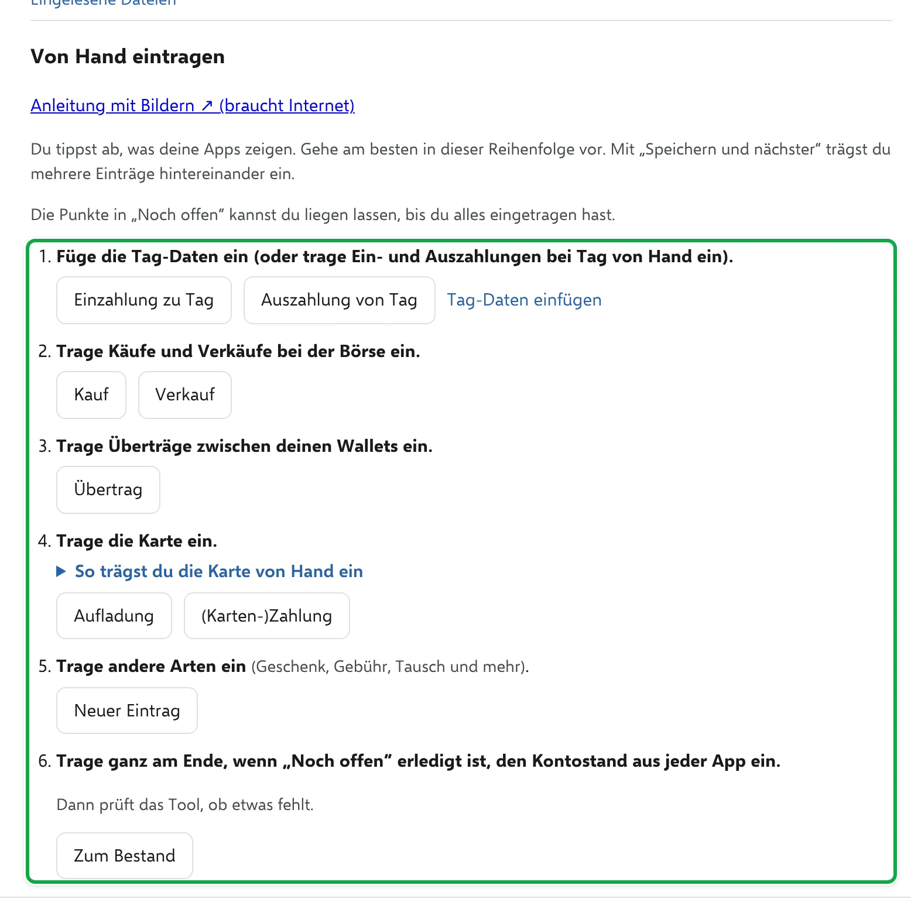
Die Liste hat sechs Schritte: Tag, Börse, Überträge, Karte, Anderes und zuletzt, freiwillig, der Kontostand. Gehe sie von oben nach unten durch und lass die Punkte in „Noch offen“ liegen, bis du durch bist. Bei Schritt 1 musst du meist nichts tippen: „Statt abtippen: aus Tag kopieren ›“ führt zum Einfügen der Tag-Daten (Abschnitt 7). „So trägst du von Hand ein“ rechts oben fasst das Vorgehen zusammen.
Die Krypto-Karte steht in Abschnitt 11, ein Tausch in Abschnitt 12, der Kontostand als freiwillige Kontrolle in Abschnitt 14.
Kauf bei einer Börse ohne Datei
Anna hat am 30.06. bei Kraken 252 USDC für 222,00 € gekauft. Klicke auf „Kauf“.

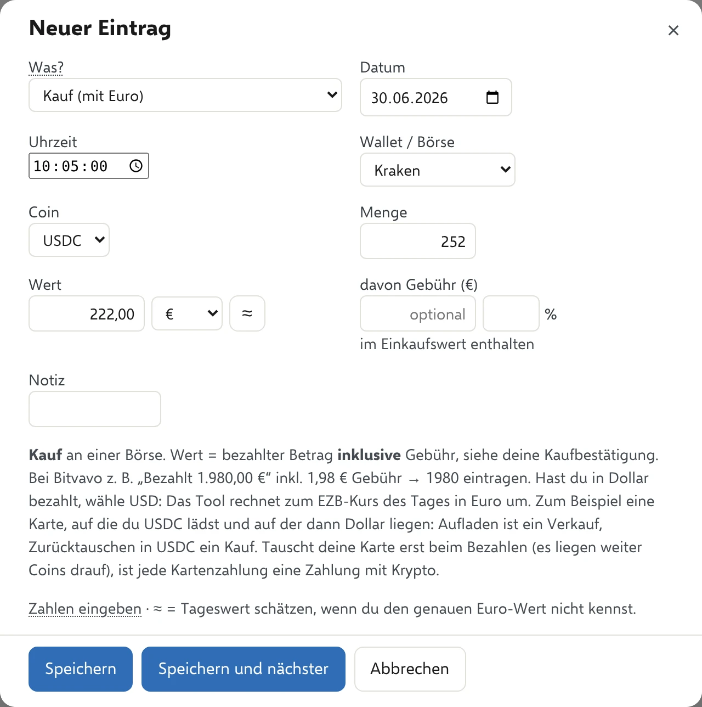
- Trage Datum und Uhrzeit aus deiner Kaufbestätigung ein.
- Bei „Wallet / Börse“ wählst du „+ Neue Wallet …“, tippst „Kraken“ und klickst auf „OK“.
- Wähle den Coin und trage die Menge ein.
- Bei „Wert“ trägst du den bezahlten Betrag in Euro mit der Gebühr ein.
Klicke auf „Speichern“, oder auf „Speichern und nächster“, wenn noch ein Eintrag kommt.
Übertrag in deine Wallet
Danach hat Anna die 252 USDC von Kraken in ihre Wallet geschickt, angekommen sind 250 USDC. Klicke auf „Übertrag“.

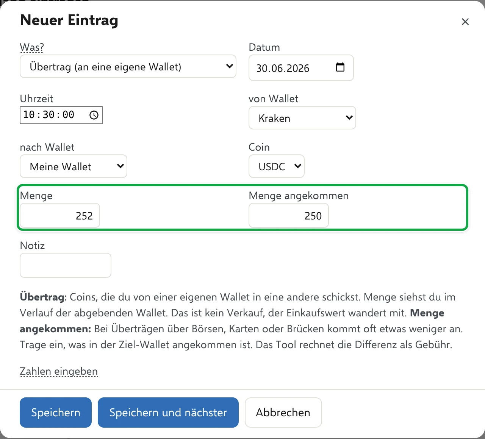
Wähle bei „von Wallet“ Kraken und bei „nach Wallet“ deine Wallet. Bei „Menge“ trägst du ein, was abgebucht wurde, bei „Menge angekommen“, was in deiner Wallet ankam. Das Tool rechnet den Unterschied als Gebühr.
Bezahlung erhalten
Hast du Coins als Bezahlung für eine Arbeit oder Leistung bekommen, klicke auf „Neuer Eintrag“ und wähle bei „Was?“ unter „Coins kamen dazu“ „Bezahlung erhalten“. Einen Wert trägst du nicht ein: Das Tool nimmt den Wert am Tag des Eingangs als Einkaufswert. Die Bezahlung selbst versteuerst du gesondert. Das Tool rechnet nur, was danach mit den Coins passiert.
Annas Stand im Tool: Bitvavo 6,23 USDC · Meine Wallet 1.250,00 USDC · „Noch offen“ 4 (1 rot, 3 gelb)
11. Deine Krypto-Karte
Nur wenn du eine Krypto-Karte hast. Sonst überspring diesen Abschnitt.
Mit einer Krypto-Karte zahlst du im Geschäft mit deinen Coins. Für die Steuer ist jede Zahlung damit ein Verkauf. Deshalb trägst du beides ein: wie viel du auf die Krypto-Karte geladen hast und jede Zahlung damit.
- Deine Wallet
- Aufladung(mit Gebühr)
- Krypto-Karte
- Kartenzahlung
- Geschäft
Die Aufladung
Öffne im Reiter „Wallet“ oben „＋ Daten“, wähle „Von Hand“ und klicke auf „Aufladung“. Es öffnet sich das Formular für einen Übertrag.

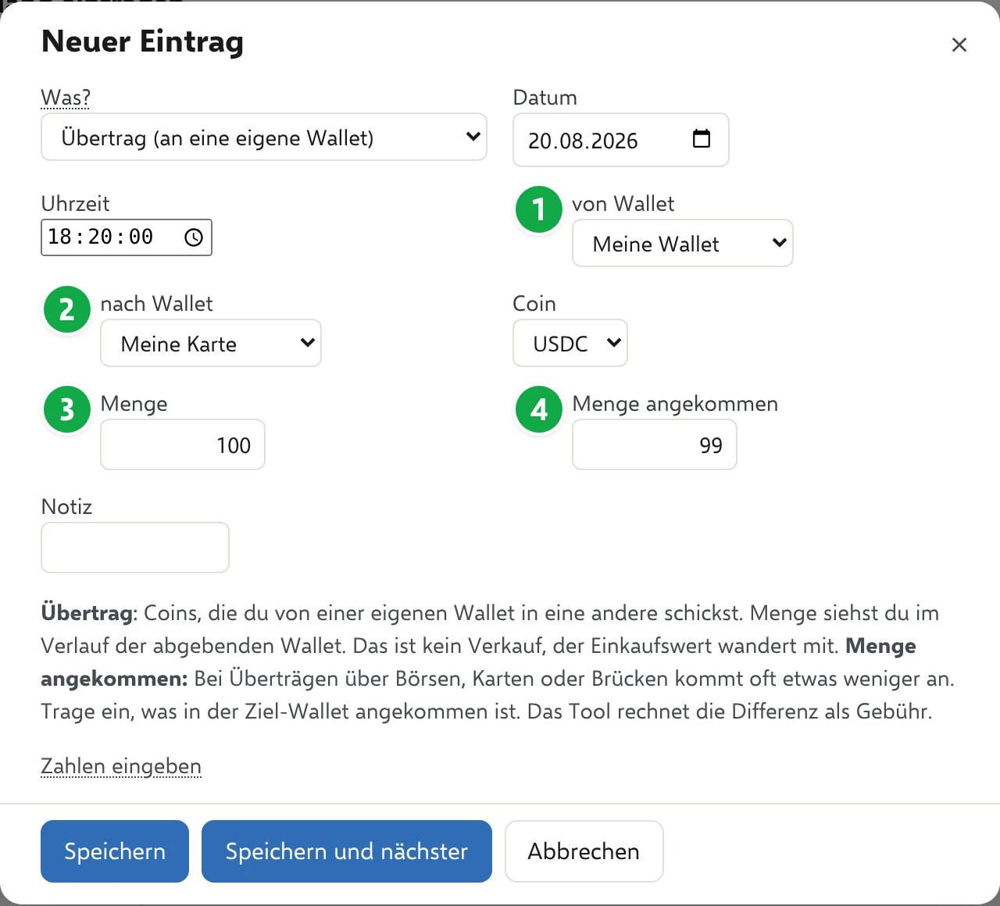
- Wähle bei „von Wallet“ die Wallet, aus der du aufgeladen hast.
- Bei „nach Wallet“ wählst du beim ersten Mal „+ Neue Karte …“, tippst „Meine Karte“ und klickst auf „OK“. Hast du deine Krypto-Karte schon eingetragen, steht sie dort schon.
- Bei „Menge“ trägst du ein, was von deiner Wallet abging, bei Anna 100.
- Bei „Menge angekommen“ trägst du ein, was die Karten-App als Aufladung zeigt, bei Anna 99. Das Tool rechnet den Unterschied als Gebühr.
Klicke auf „Speichern“.
Die Kartenzahlung
Klicke auf „(Karten-)Zahlung“. Es öffnet sich das Formular für eine Zahlung, bei „Wallet / Börse“ steht schon deine Krypto-Karte.

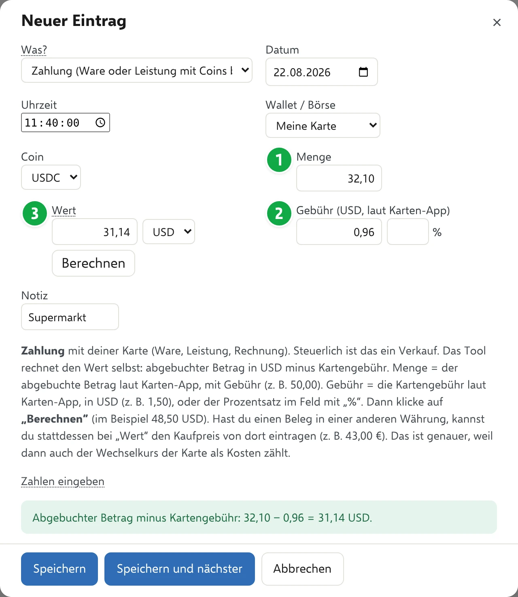
- Trage bei „Menge“ ein, was abgebucht wurde, mit Gebühr. Bei Anna 32,10 USDC.
- Bei „Gebühr“ trägst du die Gebühr aus der Karten-App in USD ein, bei Anna 0,96.
- Klicke auf „Berechnen“: 32,10 minus 0,96 = 31,14 USD.
Hast du einen Kassenbon in Euro, kannst du stattdessen bei „Wert“ den Betrag von dort eintragen.
Klicke auf „Speichern“. Trage so jede Zahlung mit der Krypto-Karte ein. Den Kontostand aus der Karten-App kannst du in Abschnitt 14 eintragen. Dann prüft das Tool, ob eine Zahlung fehlt.
Mit Wallet-Dateien liest das Tool Aufladungen und Kartenzahlungen auch selbst ein. Wie du so eine Datei bekommst, zeigt im Reiter „Wallet“ unter „＋ Daten“ bei „Wallet-Dateien“ der Knopf „So lädst du die Datei aus dem Block-Explorer“.
Annas Stand im Tool: Bitvavo 6,23 USDC · Meine Karte 66,90 USDC · Meine Wallet 1.150,00 USDC · „Noch offen“ 4 (1 rot, 3 gelb)
12. Coins getauscht (nur wenn nötig)
Nur wenn du getauscht hast: einen anderen Coin, z. B. ETH, in USDC oder USDT, oder umgekehrt. Sonst überspring diesen Abschnitt.
Das Tool rechnet nur mit USDC und USDT. Ein Tausch mit einem anderen Coin ist die Grenze zwischen dem Tool und deinen anderen Coins. Über diese Grenze wandert eine Zahl: der Einkaufswert. Das Tool zeigt dir jede dieser Zahlen in der Karte „Andere Coins“. Es rechnet deine anderen Coins nicht.
In Österreich
Aus anderem Coin getauscht (z. B. ETH → USDC)
Das ist kein Verkauf. Deine USDC übernehmen den Einkaufswert der ETH, die du dafür hergegeben hast.
Mit der Börsen-Datei
Annas Tausch bei Bitvavo stand schon in der Vorschau aus Abschnitt 9. Hast du die ETH bei derselben Börse gekauft, fragt die Vorschau: „Woher kamen die 0,003 ETH, die du am 25.08. getauscht hast?“ Anna wählt ihren Kauf vom 28.07., dann rechnet das Tool den Einkaufswert selbst: 5,00 €. Kamen die Coins anders dazu oder weißt du es nicht, wähle die zweite Möglichkeit. Dann nimmt das Tool einen Ersatzwert (siehe unten).

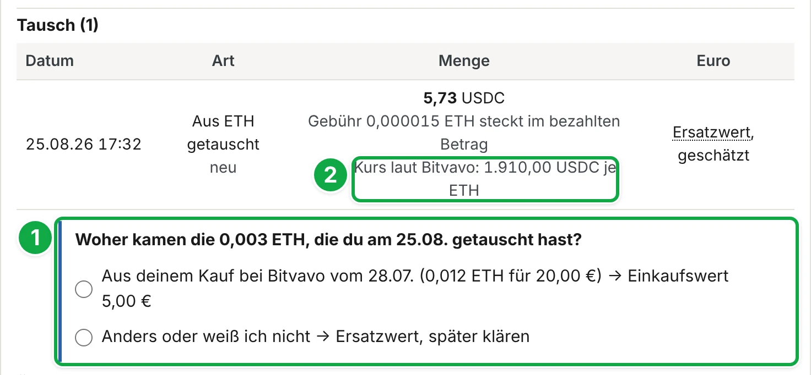
Von Hand
Den Tausch bei Kraken vom 26.08. (0,01 ETH in 19,05 USDC) trägt Anna von Hand ein. Öffne „＋ Daten“, wähle „Von Hand“, klicke auf „Neuer Eintrag“ und wähle bei „Was?“ „Aus anderem Coin getauscht“. Trage Datum und Uhrzeit ein, wähle die Wallet / Börse und den Coin, den du bekommen hast.

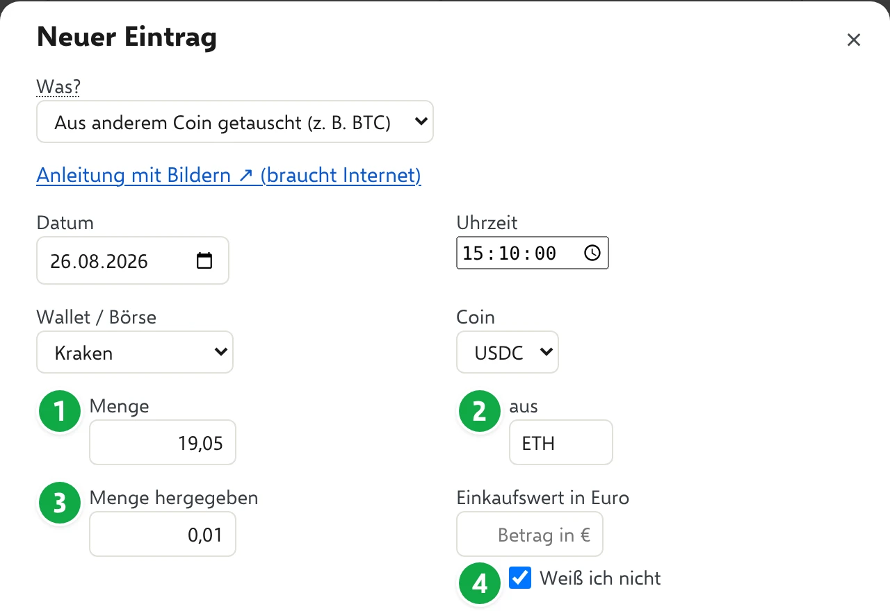
- Menge: die USDC, die du bekommen hast, nach der Gebühr.
- aus: der Coin, den du hergegeben hast.
- Menge hergegeben: die ETH, die weggegangen sind.
- Weiß ich nicht: Anna findet ihren Kaufbeleg nicht und setzt das Häkchen. Dann nimmt das Tool einen Ersatzwert: den Wert deiner USDC am Tausch-Tag. Er kann zu hoch oder zu niedrig sein.
In „Noch offen“ steht dazu ein gelber Punkt. Dort trägt Anna den Einkaufswert nach, sobald sie den Beleg hat (Abschnitt 13).
Kennst du den Einkaufswert, trage ihn gleich ein: bei „Einkaufswert in Euro“, was diese ETH dich damals gekostet haben, mit Gebühr, nicht ihr Wert am Tausch-Tag. Die Rechenhilfe darunter rechnet ihn aus: bezahlt ÷ gekaufte Menge × getauschte Menge. Ein Bild dazu steht in Abschnitt 13.
Wo finde ich den Einkaufswert? In der Kaufbestätigung oder im Verlauf der Börse, bei der du die Coins gekauft hast. Mehrmals gekauft? Alle bezahlten Beträge zusammen ÷ alle gekauften Mengen zusammen. Hast du zwischendurch schon verkauft oder getauscht, stimmt das nur ungefähr.
In anderen Coin getauscht (z. B. USDC → ETH)
Bei Anna der Tausch vom 27.08.: 18 USDC in ETH. Öffne „＋ Daten“, wähle „Von Hand“, klicke auf „Neuer Eintrag“ und wähle bei „Was?“ „In anderen Coin getauscht“.

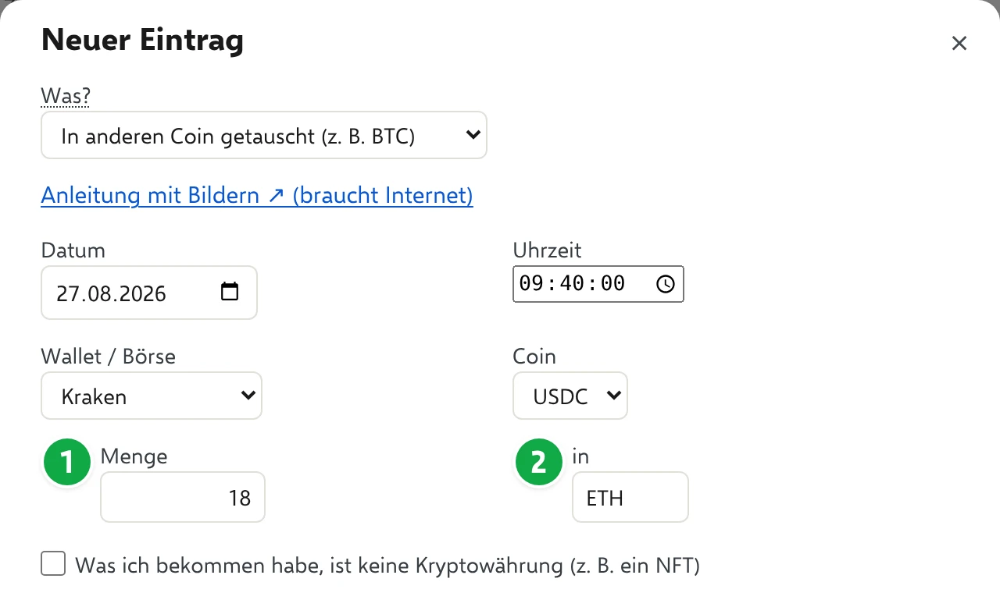
- Menge: die USDC, die weggegangen sind, mit Gebühr.
- in: der Coin, den du bekommen hast.
Das ist kein Verkauf. Sonst trägst du nichts ein: Das Tool rechnet aus, welcher Einkaufswert auf die neuen Coins übergeht, und zeigt ihn in der Karte „Andere Coins“. Du brauchst ihn, wenn du diese Coins später verkaufst. Hast du keine Kryptowährung bekommen, z. B. ein NFT, setze das Häkchen dafür. Dann ist es ein Verkauf.
In Deutschland
Aus anderem Coin getauscht (z. B. ETH → USDC)
Das sind zwei Vorgänge: ein Verkauf deiner ETH und ein Kauf der USDC.
Mit der Börsen-Datei
Lies die Datei ein wie in Abschnitt 9. Die Vorschau zeigt den Tausch als „Aus ETH getauscht“. Du musst nichts wählen.
Von Hand
Bei Anna der Tausch bei Kraken vom 26.08.: 0,01 ETH in 19,05 USDC. Öffne „＋ Daten“, wähle „Von Hand“, klicke auf „Neuer Eintrag“ und wähle bei „Was?“ „Aus anderem Coin getauscht“. Trage Datum und Uhrzeit ein, wähle die Wallet / Börse und den Coin, den du bekommen hast.

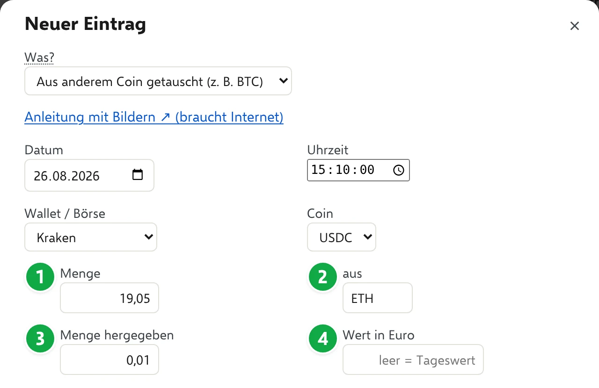
- Menge: die USDC, die du bekommen hast, nach der Gebühr.
- aus: der Coin, den du hergegeben hast.
- Menge hergegeben: die ETH, die weggegangen sind. Dieses Feld ist optional. Die Menge steht dann in der Karte „Andere Coins“ und in der Excel mit allen Daten.
- Wert in Euro: Lass das Feld leer. Das Tool nimmt dann den Euro-Wert der USDC am Tausch-Tag.
Dieser Wert ist ihr Einkaufswert, der Tausch-Tag ihr Kaufdatum.
Den Gewinn oder Verlust deiner ETH rechnet das Tool nicht. Rechne ihn mit einem Krypto-Steuertool oder mit deiner Steuerberatung. Als Verkaufspreis gilt derselbe Euro-Wert, die Karte „Andere Coins“ zeigt ihn. Trage den Gewinn im Reiter „Steuer“ unter „Andere private Veräußerungsgewinne“ ein, damit die Freigrenze stimmt.
In anderen Coin getauscht (z. B. USDC → ETH)
Bei Anna der Tausch vom 27.08.: 18 USDC in ETH. Öffne „＋ Daten“, wähle „Von Hand“, klicke auf „Neuer Eintrag“ und wähle bei „Was?“ „In anderen Coin getauscht“. Trage Datum und Uhrzeit ein, wähle die Wallet / Börse und den Coin, den du hergegeben hast.

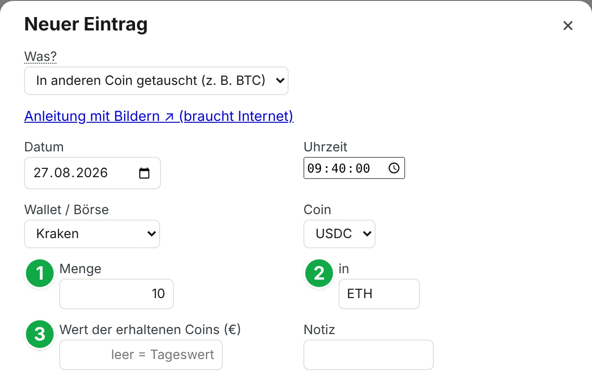
- Menge: die USDC, die weggegangen sind, mit Gebühr.
- in: der Coin, den du bekommen hast.
- Wert der erhaltenen Coins (€): Lass das Feld leer. Das Tool nimmt dann den Tageswert der hergegebenen USDC.
Das ist ein Verkauf deiner USDC. Derselbe Wert ist der Einkaufswert deiner neuen Coins, der Tausch-Tag ihr Kaufdatum. Beides zeigt die Karte „Andere Coins“.
Die Karte „Andere Coins“
Im Reiter „Wallet“ steht zwischen „Bestand“ und „Alle Vorgänge“ die Karte „Andere Coins“. Sie zeigt jeden Tausch mit einem anderen Coin und den Wert, der dabei wandert. Hast du in einen anderen Coin getauscht, ist das sein Einkaufswert. Du brauchst ihn, wenn du den Coin später verkaufst.

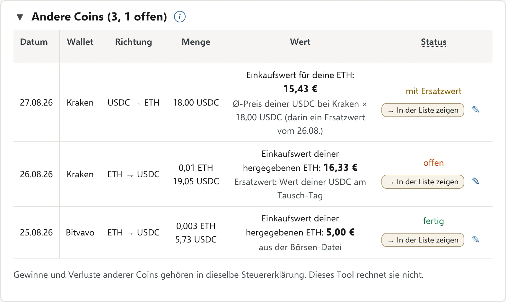
Mit „✎“ bearbeitest du einen Eintrag, „In der Liste zeigen“ springt zu „Alle Vorgänge“. Was ein Status bedeutet, erklärt das Tool: Klicke in der Karte auf das Wort „Status“.
Annas Stand im Tool: Bitvavo 6,23 USDC · Kraken 1,05 USDC · Meine Karte 66,90 USDC · Meine Wallet 1.150,00 USDC · „Noch offen“ 6 (1 rot, 5 gelb)
13. „Noch offen“ abarbeiten
Wenn du alles eingetragen hast, klicke im Reiter „Wallet“ oben auf „Noch offen“. Jetzt sind viele Punkte gelb: Zu ihnen hat das Tool einen Vorschlag gefunden. Ein Fenster zeigt dir die Punkte einen nach dem anderen, den ältesten zuerst. Mit „Nächster“ und „Zurück“ unten im Fenster blätterst du durch die Punkte.
Die Farbe sagt, wie wichtig ein Punkt ist:
- Rot, fehlt für die Steuer: Ohne deine Antwort stimmt die Krypto-Steuer nicht.
- Gelb, bitte prüfen: Meist hat das Tool einen Vorschlag. Du übernimmst ihn oder lehnst ihn ab.
- Grau, gut zu wissen: An der Steuer ändert das nichts.

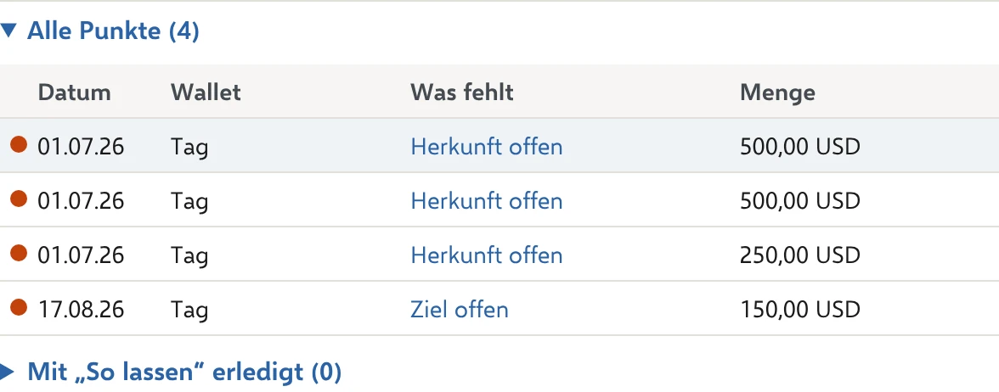
Weiter unten im Fenster stehen unter „Alle Punkte“ alle Punkte als Liste, bei Anna sind es jetzt 6. Ein Klick auf eine Zeile zeigt diesen Punkt.
So gehst du vor
- Stimmt der Vorschlag, klicke auf „Übernehmen“.
- Stimmt er nicht, klicke auf „Nein“ und wähle selbst.
- Weißt du es nicht, lass den Punkt für später oder klicke auf „So lassen“.
Der Vorschlag

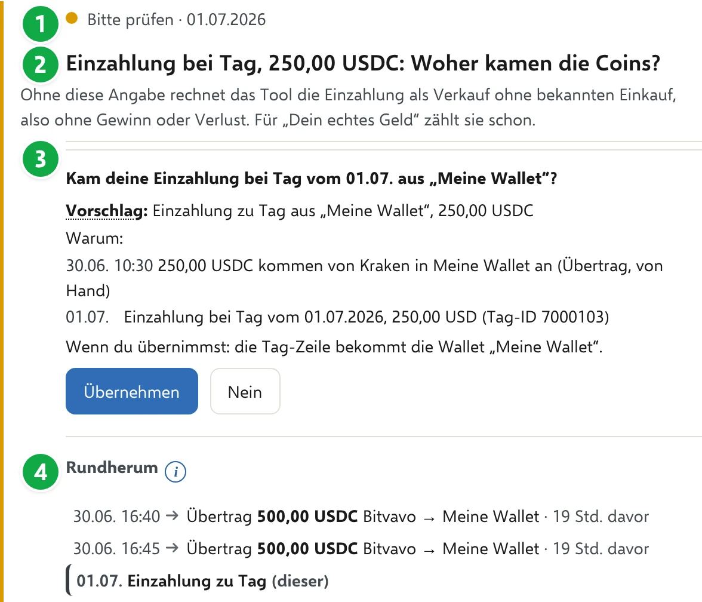
- Farbe und Datum: Gelb heißt, das Tool hat einen Vorschlag.
- Die Frage, um die es geht. Grau darunter steht, was das Tool macht, solange du nicht antwortest.
- Der Vorschlag: was das Tool eintragen würde, warum und was sich dann ändert.
- „Rundherum“ zeigt, was sich in deinen Wallets kurz davor und danach bewegt hat. Ein Klick auf eine Zeile springt zu diesem Vorgang in der Liste „Alle Vorgänge“. Mit „← Zurück zu „Noch offen““ oben in der Liste kommst du zurück.
Selbst wählen

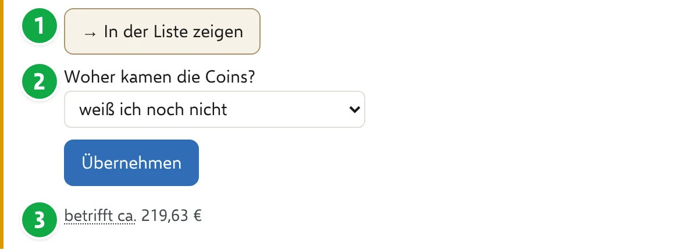
- „In der Liste zeigen“ springt zu diesem Vorgang in der Liste „Alle Vorgänge“.
- Hier antwortest du selbst: Wähle die Wallet, aus der die Coins kamen, und klicke auf „Übernehmen“.
- „betrifft ca.“ sagt, um wie viel Euro es ungefähr geht.
Hat das Tool keinen Vorschlag, oder stimmt er nicht, wählst du hier selbst. Kam das Geld als Euro über die Bank, wähle „Bank“.
Viele Vorschläge auf einmal

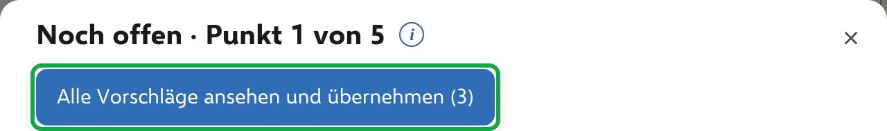
Direkt unter dem Titel von „Noch offen“ steht dann „Alle Vorschläge ansehen und übernehmen“. Den Knopf gibt es nur, wenn das Tool sich sicher ist. Vorschläge über einen Dienst oder mit mehreren Möglichkeiten entscheidest du einzeln.

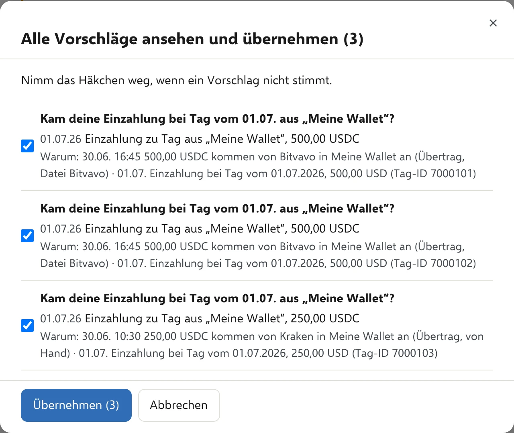
Anna prüft die drei Vorschläge und klickt auf „Übernehmen (3)“.
Ein Vorschlag kommt dazu
Danach steht oben „Alle Vorschläge ansehen und übernehmen (1)“. Das Tool fragt, ob die 150 USDC vom 17.08. in „Meine Wallet“ gingen, denn ohne sie fehlen dort am 20.08. 100 USDC für die Aufladung. Das stimmt, also klickt Anna auf „Übernehmen“.

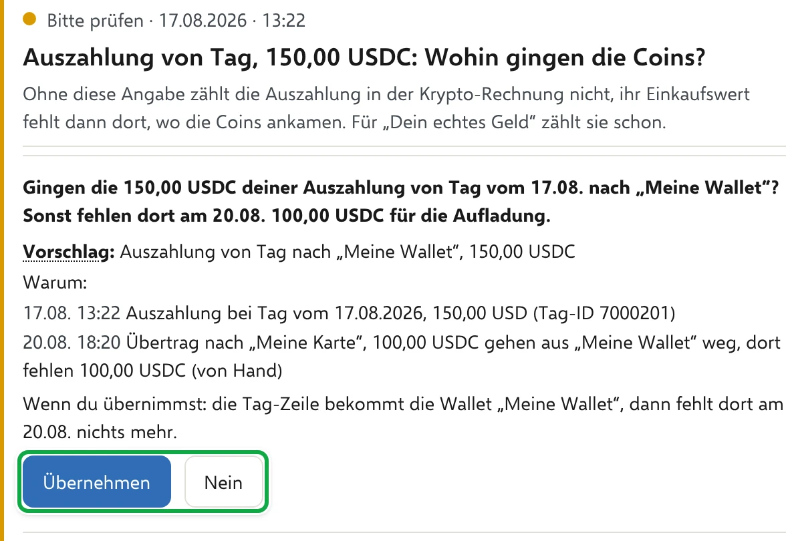
Einkaufswert nachtragen

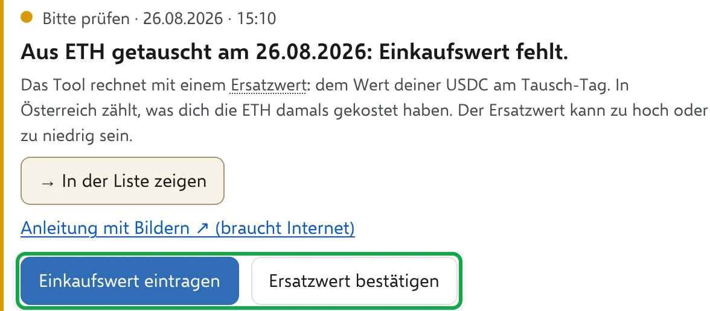
Dieser gelbe Punkt gehört zu Annas Tausch bei Kraken vom 26.08. (Abschnitt 12). Inzwischen hat sie den Kaufbeleg gefunden: 0,015 ETH für 30,00 €. Sie klickt auf „Einkaufswert eintragen“.

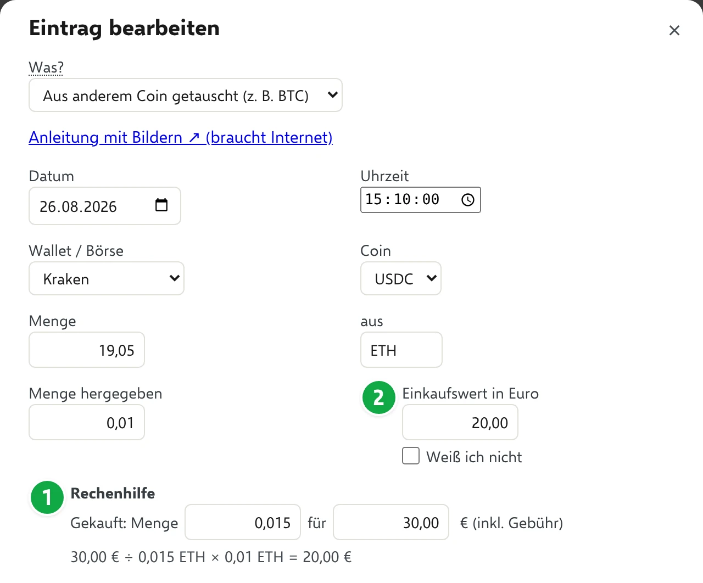
- Rechenhilfe: Trage ein, wie viel du damals gekauft und was du dafür bezahlt hast, mit Gebühr. Das Tool rechnet: 30,00 € ÷ 0,015 ETH × 0,01 ETH = 20,00 €.
- Einkaufswert in Euro: Hier steht das Ergebnis. Kennst du den Wert schon, trägst du ihn hier direkt ein.
Klicke auf „Speichern“. Findest du den Einkaufswert nicht, klicke am Punkt auf „Ersatzwert bestätigen“. Dann behältst du den Ersatzwert, kläre das mit deiner Steuerberatung. Das kannst du später zurücknehmen.
So lassen

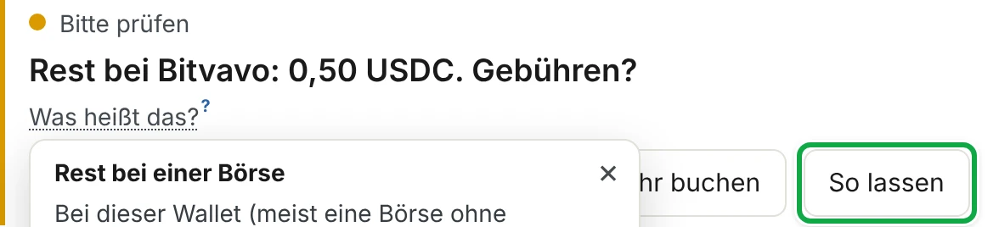
Manche Punkte kannst oder willst du nicht klären. Bei Anna liegen nach dem Tausch vom 27.08. noch 1,05 USDC bei Kraken, und das Tool fragt, ob das Gebühren waren. Die Coins liegen wirklich dort: Anna klickt auf „So lassen“, dann fragt das Tool nicht wieder. Waren es Gebühren, nimm einen der anderen beiden Knöpfe.
Fehlt dem Tool ein Einkauf, steht am Punkt unter „So löst du das“, was du tun kannst: „Eintragen, woher sie kamen“, „Hatte ich schon“ oder „So lassen“. Mit „So lassen“ rechnet das Tool diesen Teil ohne Gewinn oder Verlust, und im Reiter „Steuer“ steht dazu ein Satz. Hängen andere Punkte an diesem Einkauf, nennt der Punkt sie als Folgen. Behebst du ihn, verschwinden sie von selbst.
Unter „Alle Punkte“ findest du solche Punkte bei „Mit „So lassen“ erledigt“ und kannst sie dort wieder anzeigen.
Wann du fertig bist

Fertig bist du, wenn in „Noch offen“ keine roten Punkte und keine offenen Vorschläge mehr stehen. Gelbe Vorschläge, die für die Steuer zählen (mit „betrifft ca.“), übernimmst du oder lehnst sie ab. Nur Punkte ohne Wirkung auf die Steuer dürfen stehen bleiben.
Jetzt stimmen deine Krypto-Werte im Reiter „Steuer“.

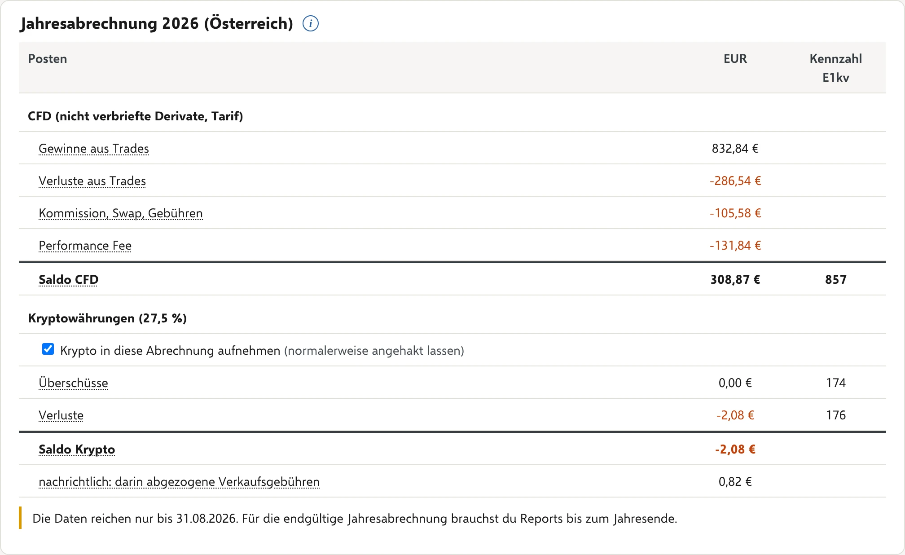
Annas Stand im Tool: Bitvavo 6,23 USDC · Kraken 1,05 USDC · Meine Karte 66,90 USDC · Meine Wallet 50,00 USDC · „Noch offen“ ohne Zahl
Fertig: Deine Krypto-Werte im Reiter „Steuer“ stimmen jetzt. Speichere eine Sicherung.
14. Zur Kontrolle: der Kontostand (freiwillig)
Hier vergleichst du, was deine Apps zeigen, mit dem, was das Tool aus deinen Einträgen und Wallet-Dateien rechnet. So merkst du, ob etwas fehlt.
Klicke im Reiter „Wallet“ in der Karte „Bestand“ auf „Bestand ansehen und prüfen“. Den gleichen Weg gibt es in „＋ Daten“ bei „Von Hand“, ebenfalls mit „Bestand ansehen und prüfen“. Das Fenster zeigt je Coin eine Tabelle: je Wallet, was im Tool steht, den Einkaufswert und den Ø-Preis.

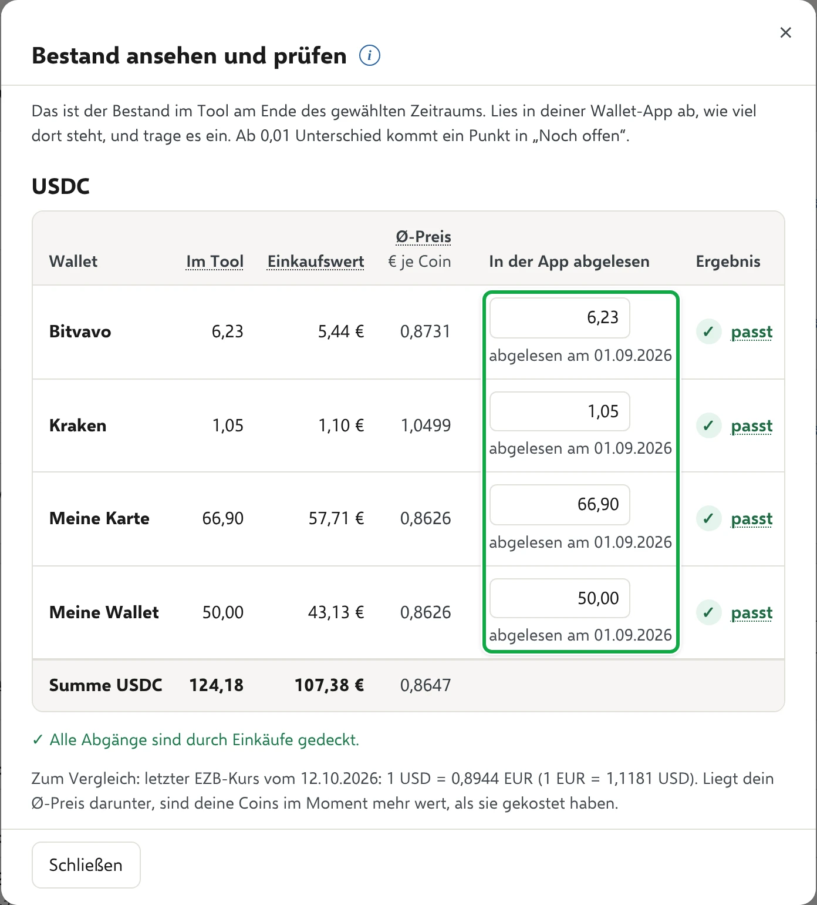
Lies in jeder App ab, wie viel dort steht, und trage es bei „In der App abgelesen“ ein. Anna trägt alle vier Werte ein: 6,23 USDC bei Bitvavo, 1,05 USDC bei Kraken, 66,90 USDC auf der Krypto-Karte und 50 USDC in „Meine Wallet“. Unter dem Feld steht der Tag, an dem du abgelesen hast. Passt ein Wert zum Bestand im Tool, steht bei „Ergebnis“ „✓ passt“. Ein Klick darauf zeigt, womit das Tool verglichen hat. Ab 0,01 Unterschied steht dort, wie viel im Tool fehlt oder zu viel ist, und es kommt ein Punkt in „Noch offen“. Dort siehst du, was du tun kannst. Leerst du das Feld, ist der Wert weg.

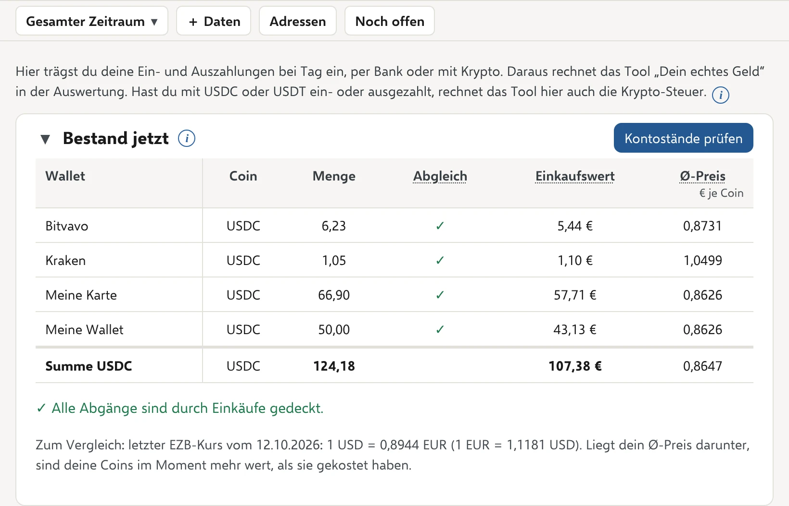
Annas Stand im Tool: Bitvavo 6,23 USDC · Kraken 1,05 USDC · Meine Karte 66,90 USDC · Meine Wallet 50,00 USDC · „Bestand ansehen und prüfen“ viermal „✓ passt“ · „Noch offen“ ohne Zahl
15. Wie es weitergeht
Jeden Monat (empfohlen)
- Speichere in MetaTrader 5 für jedes Konto den Report neu.
- Ziehe alle Reports in den Reiter „Reports“.Tippe im Reiter „Reports“ auf das Feld „Hier tippen, um eine Report-Datei auszuwählen“ und wähle alle Reports aus. Das Tool erkennt, was schon da ist.
- Füge die neuen Tag-Daten ein und sieh in „Noch offen“ nach.
- Speichere eine Sicherung.
Häufige Fragen
Die Zahlen im Tool stimmen nicht mit meinen Zahlen überein.
Hast du vielleicht auf EUR gestellt statt auf USD? Die Währung stellst du in der Filterzeile der Auswertung um.
Das Tool zeigt Coins in einer Wallet, die meine App nicht zeigt.
Vielleicht liegen sie auf einem anderen Netzwerk, z. B. Base. Gib deine Adresse im Block-Explorer ein und sieh dort nach.